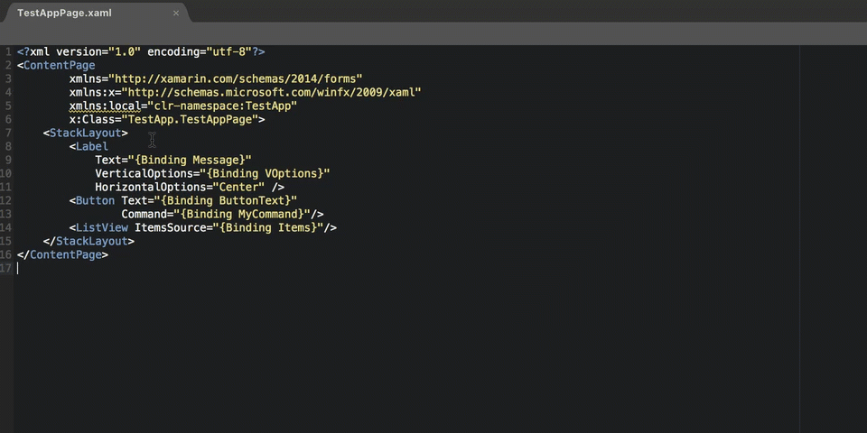

Xamarin.Forms Quick Start
Learn to use the most handy features in MFractor for Xamarin.Forms
Introduction
Welcome to the quickstart guide for using MFractor with Xamarin.Forms.
This document explains the most useful features of MFractor for Xamarin.Forms.
Configuring A Binding Context
When the BindingContext property is explicitly set for a Xaml view, MFractor can analyse binding expressions and perform refactoring from Xaml to the binding context.
We explicitly configure the binding context using a view model locator:
ViewModelLocator.cs
public namespace MyApp
{
public static class ViewModelLocator
{
public static readonly LoginViewModel LoginViewModel = new LoginViewModel();
}
}
LoginPage.xaml
<ContentPage
xmlns:local="clr-namespace:MyApp;assembly=MyApp"
BindingContext="{x:Static local:ViewModelLocator.LoginViewModel}"/>
For more detail, see Configure Binding Context.
Mvvm Naming Conventions
Implicitly associate a view to a ViewModel using these naming conventions:
- Classes that end with
ViewModelare assumed to be a view model for a Xaml view. - Xaml files that end with Page or View are assumed to be a xaml view for a view model.
- When a view and view model share the same name without Page, View or ViewModel, MFractor assumes an implicit association.
Consider LoginPage.xaml, LoginPage.xaml.cs and LoginViewMode.cs:
- LoginPage.xaml is considered a xaml view.
- LoginPage.xaml.cs is considered the code behind class.
- LoginViewModel.cs is considered the view model.
For more detail, see Implicit Binding Context Resolution.
Using Mvvm Navigation
We can quickly navigate between Views, Code Behind Class and ViewModel when we use the Mvvm naming conventions.
Right click and select:
- Go-To ViewModel when in a Xaml view or code behind class to jump to the ViewModel.
- Go-To Code Behind Class when in a Xaml view or ViewModel to jump to the code behind class.
- Go-To Xaml View when in a code behind class or view model to jump to the Xaml view.
For more detail, see Mvvm Navigation.
Xaml Analysis
The Xaml analyser inspects Xaml files for code issues and underlines the issue in either red or yellow.
- Hover over a xaml issue to view more information on the
- Code issues underlined in yellow are fixable. Right click on the issue region, browse to Fix and select the fix you'd like to apply.
For more detail, see:
Generating ViewModel Bindings
When a binding context is specified for a xaml view (Configuring A Binding Context), MFractor provides code fixes to implement missing bindings.
Right click on the value component of a binding expression, browse to Fix and then select Generate property...:
For example:

For more detail, see Implementing Missing Bindings.
Implementing ViewModels
When a xaml view has binding expressions but the binding context is not explicitly or implicitly defined, MFractor can collect all binding expressions and generate an implementation of the binding context as a ViewModel.
Right click on anywhere in a document, browse to Refactor and then select Implement View Model:
For example:

For more detail, see Implementing a ViewModel.